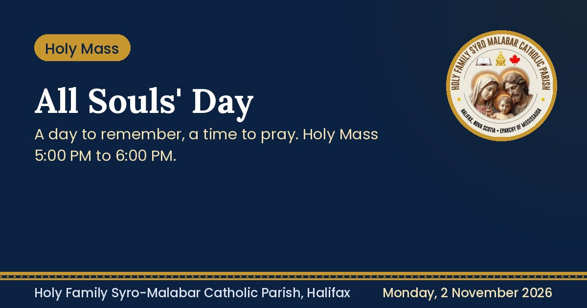

6Nov
St. Mother Teresa unit prayer meeting
Friday, 7:30 PM. Host family's homeMonthly prayer meeting for the St. Mother Teresa unit.
Add to calendarSunday announcements, posters and everything coming up in the parish, in one place.
 Sunday announcements. 1 November 2026Sunday announcementsProperty update, World Youth Day 2027, no Holy Mass Nov 9 to 14, and more.
Sunday announcements. 1 November 2026Sunday announcementsProperty update, World Youth Day 2027, no Holy Mass Nov 9 to 14, and more.
 Mandatory. Deadline 30 NovemberParish registration and renewal 2026Families and bachelors: please register or update your details.
Mandatory. Deadline 30 NovemberParish registration and renewal 2026Families and bachelors: please register or update your details.

Holy Mass. 2 November 2026All Souls' DayHoly Mass 5:00 PM to 6:00 PM at St. Stephen Church. Online session. 2 November 2026Memento MoriA reflection by Rev. Fr. Jisson Paul Vengasserry.
Online session. 2 November 2026Memento MoriA reflection by Rev. Fr. Jisson Paul Vengasserry.
 Celebration. 1 November 2026All Saints' Day celebrationCatechism, Holy Rosary and Holy Mass.
Celebration. 1 November 2026All Saints' Day celebrationCatechism, Holy Rosary and Holy Mass.
Monthly prayer meeting for the St. Mother Teresa unit.
Add to calendarLast day to bring non-perishable food: pasta, canned food, cereals, oats.
Remind meFor members of the parish council.
See agendaPlease keep our priests in your prayers.
Monthly prayer meeting for the St. Thomas unit.
Add to calendarFrom Fr. Stephen to St. Agnes. Everyone is requested to help.
I can helpOur parish family celebration of Christmas.
Add to calendarRegistration is open. All are encouraged to join.
How to register